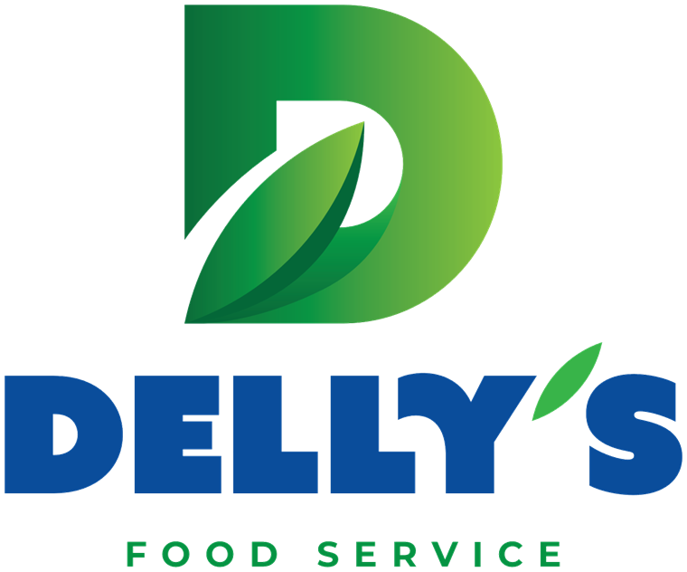
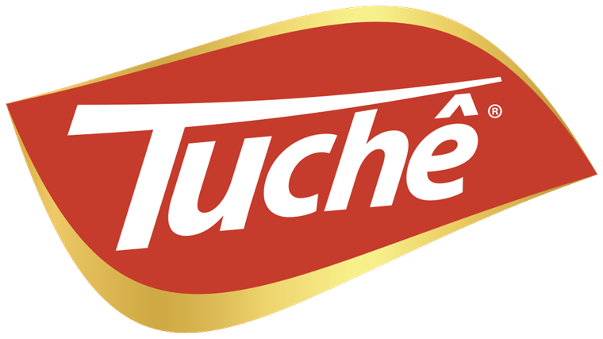

Carne porcionada para food service · by Delly's
A carne que já
chega resolvida.
Cortes bovinos, aves e suínos porcionados na sua gramatura — zero osso, zero aparas, CMV previsível e padrão idêntico em toda entrega. Produção nacional, entregue direto no seu restaurante.
A força por trás da marca
A Delly's em números
- R$ 6 biFaturamento anual
- +190 milClientes atendidos
- 80%Presença no território nacional
- +18Centros de distribuição
- +18 milEntregas diárias
- +40Cortes no catálogo
Por que Burg
Não vendemos carne. Vendemos operação resolvida.
Cinco diferenciais que aparecem no prato e fecham na planilha. Cada um vira número antes de virar promessa.
Quer ver esses diferenciais virarem número na sua planilha?
Calcular meu rendimento →Portfólio
O catálogo que já chega resolvido.
Cortes bovinos, aves, suínos e hambúrguer — porcionados, padronizados e prontos para a praça. Cada item abre com a foto real do corte: é exatamente o que chega no seu restaurante. Você paga carne — não paga osso, nem aparas.
Nenhum produto encontrado para essa busca.
Não achou o corte ou a gramatura que a sua casa precisa?
Pedir corte sob medida →CMV na ponta do lápis
Você paga carne. Não paga osso, nem aparas.
Veja quanto custa, de verdade, o quilo aproveitável quando você limpa a peça na sua cozinha — e compare com o porcionado Burg.
No porcionado você não paga aparas — e ainda elimina a mão de obra da limpeza.
Quero esse cálculo na minha operaçãoEstimativa baseada nos seus números. O resultado real depende do corte e da sua operação.
Qual operação é a sua?
Três linhas. Uma para cada cozinha.
Você não precisa de mais um fornecedor de carne. Precisa do corte certo para o jeito que a sua casa gira. Burg para impressionar, Tuchê para girar, Brit para contar história — todas by Delly's.
-
BURG · Premium porcionado
Para churrascarias, steakhouses e casas de carne onde o corte é a estrela e o cliente fotografa antes de comer.
Quando o corte é o personagem do cardápio, ele tem que sair igual à foto — na mesa 4 e na mesa 40, na terça vazia e no sábado lotado. Burg entrega gramatura cravada e maciez do primeiro ao último corte, para você precificar alto sem medo de reclamação.
Picanha em bifes 170g/220g · Bife ancho 220g · Mignon steak 120g · Picanha em peça.
Ver cortes Burg → -
TUCHÊ · Dia a dia que gira
Para self-service, executivos, redes e cozinhas de alto volume que precisam de saída rápida sem perder o padrão.
No volume, o inimigo não é o preço do quilo — é a variação. Carne que rende diferente a cada caixa estoura o CMV. Tuchê é feito para girar: porção padronizada, rendimento previsível e preparo rápido, mesmo com a equipe que você consegue contratar hoje.
Picanha fatiada Tuchê — o equilíbrio entre padrão e custo para a casa que não pode parar a linha.
Ver cortes Tuchê → -
BRIT · Raça britânica
Para cozinhas autorais, menus de degustação e chefs que vendem origem e narrativa junto com o corte.
Tem cliente que paga pela história — desde que ela seja verdadeira e o prato sustente o discurso. Brit é raça britânica para a casa que coloca procedência no cardápio e precisa que a maciez confirme a promessa do garçom.
Linha de raça britânica para carta e degustação — disponibilidade sob consulta com o time comercial.
Falar sobre a linha Brit →
A empresa

Divisão Meat Solutions — carnes selecionadas para food service.
A Delly's Meat Solutions une escala industrial e padrão artesanal para abastecer o food service de ponta a ponta, com a confiança de quem entende de carne.
Estrutura moderna e processos rigorosamente controlados garantem cortes padronizados, segurança alimentar e total confiança em cada caixa entregue.
Nossas marcas
- Linha Premium

Linha dia a dia- Linha de raça britânica
Central do food service
Conteúdo que fecha na planilha.
Guias práticos para controlar o CMV, padronizar a cozinha e escolher o corte certo — conhecimento que ajuda você a vender e a lucrar mais.
Como reduzir o CMV de carne
A fórmula, os benchmarks por tipo de casa e as perdas escondidas que inflam o custo por porção — com exemplo numérico real.
Ler o guia → OperaçãoPadronização de cortes
Como entregar o mesmo prato toda vez e depender menos do açougueiro — passo a passo e comparação de custos.
Ler o guia → ReferênciaFicha técnica de cortes bovinos
Perfil, maciez, aplicação e gramatura sugerida de cada corte, em tabela de consulta rápida.
Ler o guia →Quer o CMV fechado
antes de abrir a casa?
Diga seu corte, sua gramatura e seu volume. Devolvemos uma proposta com ficha técnica e preço por porção — sem custo de osso e sem aparas.
Pedir proposta no WhatsApp